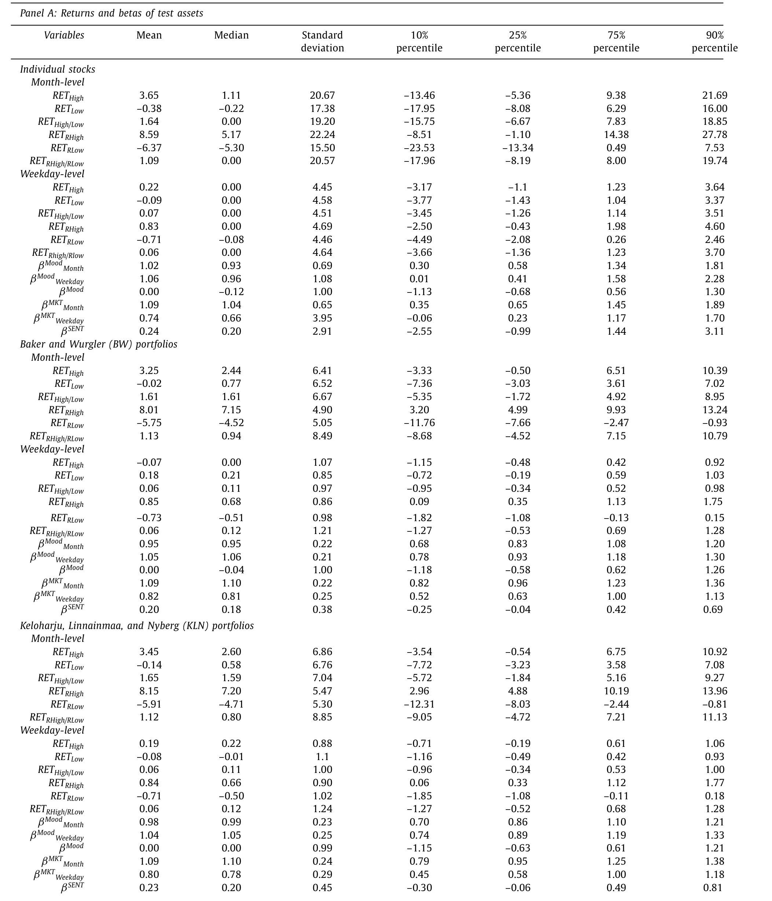
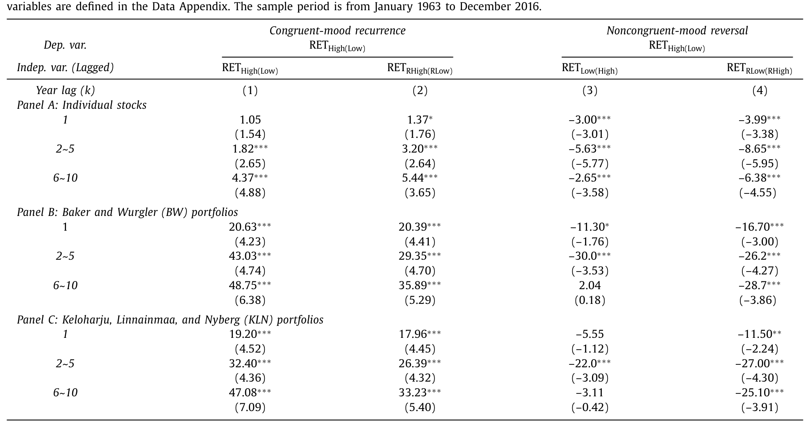
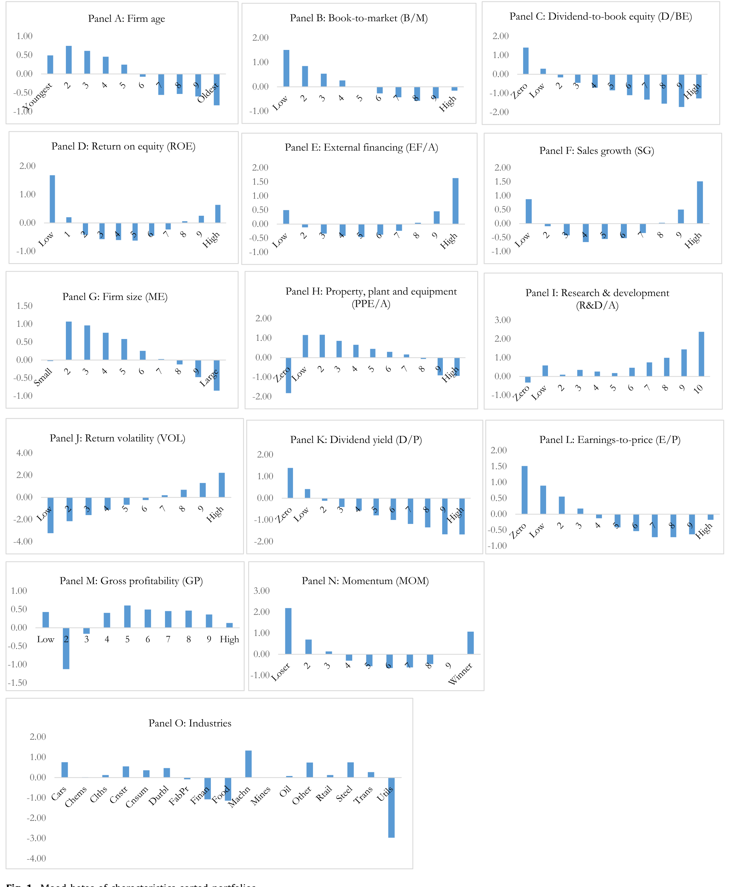
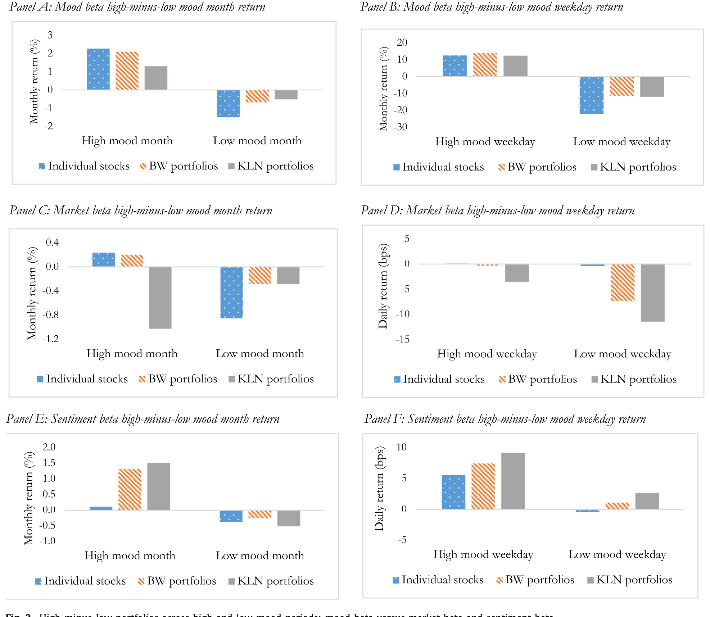
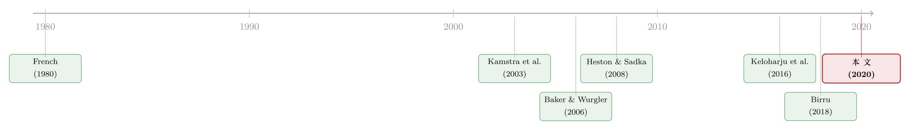

股市的「四季」，藏在一条叫情绪 beta 的曲线里
本文读的是 Hirshleifer, Jiang & DiGiovanni (2020, Journal of Financial Economics)：股票收益里那些反复出现的「日历季节性」——某些股票偏偏在一月、在周五跑赢——背后是同一只手在拨动，即投资者情绪 (mood)。作者用一个新指标「情绪 beta (mood beta)」把这只手量化出来，并证明它能稳健地预测股票在「情绪上升期」跑赢、在「情绪下降期」跑输，一个对冲组合的 Fama-French 五因子 alpha 高达每月 1.5% 以上。
1 一个让人不安的「巧合」
先说一个早就被记录在案、却一直没人能解释的怪现象。
Heston 和 Sadka 在 2008 年发现：把美股按「过去某个一月份的相对表现」排个序，这个排序会顽固地重复——今年一月跑赢的那批股票，明年一月、后年一月、乃至十年后的一月，还是倾向于跑赢。同样地，Keloharju、Linnainmaa 和 Nyberg（下称 KLN）在 2016 年发现：周五跑赢的股票，往后许多个周五还是跑赢。
这是个让效率市场信徒很不舒服的事实。它不是「一月效应」那种市场整体的季节性（那个还能用税收、小公司之类的故事搪塞），而是横截面的季节性——是 A 股票相对 B 股票的相对强弱，年复一年地在同一个日历月里复现。Heston-Sadka 试遍了成交量、波动率、行业、盈利、分红，一个都解释不了；KLN 干脆把它归结为「季节性的因子溢价 (seasonal factor premia)」，但对这溢价从哪来避而不谈。
于是一个自然的问题是：这些散落在不同频率（月度、周度）、不同日历位置（一月 vs. 周五）上的季节性，到底是一堆互不相干的巧合，还是同一个机制的不同切片？
本文的回答是后者。而那个机制，叫情绪。
2 把「情绪」请上桌：核心假说
作者提出的故事——他们称之为情绪季节性假说 (mood seasonality hypothesis)——逻辑链条干净得近乎优雅：
第一步，投资者情绪本身有可预测的季节性。这不是拍脑袋，而是心理学和金融学早有积累：新年带来的乐观（Thaler, 1987；Bergsma and Jiang, 2016），让一月份情绪高涨；季节性情感障碍 (seasonal affective disorder, SAD) 在初秋日照变短时发作最猛（Kamstra et al., 2003, 2017），让九、十月情绪低落；而「周五的雀跃、周一的沮丧」更是问卷里反复出现的常识（Birru, 2018；Stone et al., 2012）。
第二步，情绪一变，投资者对共同因子 (common factors) 的定价就跟着偏。心情好的时候，人们对未来因子收益过度乐观，于是把因子整体定高了；心情差则反之。这是因子层面的错误定价 (factor mispricing)。
但真正关键的一步在于第三步：这个因子层面的错价，会顺着每只股票在该因子上的载荷 (factor loading)，被「分摊」到横截面上。载荷高的股票，继承的错价就多；载荷低的，继承的就少。
把三步连起来，结论就呼之欲出了：一只股票对季节性情绪的敏感度，恰恰等于它在那些被情绪定错价的因子上的载荷之和。 而这个「对情绪的敏感度」，正是本文要造的新尺子。
作者据此提出两个可检验的假说，我把原文照搬过来：
假说 1（情绪复现与反转效应）：横截面上，一只证券的历史季节收益，与它在情绪一致 (congruent-mood) 期的未来季节收益正相关，与它在情绪不一致 (noncongruent-mood) 期的未来季节收益负相关。
假说 2（情绪 beta 效应）：情绪 beta 在情绪上升期正向预测横截面收益，在情绪下降期负向预测。
注意假说 1 那个「反转」——它是整篇文章最反直觉、也最有杀伤力的地方：如果一月和三月是高情绪月、九月和十月是低情绪月，那么在一月跑赢的股票，不仅会在未来的一月复现跑赢，还会在未来的九、十月反转为跑输。同一段历史，根据未来情绪与它「合不合拍」，能预测出方向相反的收益。这是任何「风险溢价」或「行业惯性」故事都很难配出来的指纹。
3 怎么给月份和星期「贴情绪标签」
要检验上面的假说，先得说清楚哪些日历期是「高情绪」、哪些是「低情绪」。作者的做法很朴素：看全样本里哪个月、哪个星期的等权市场收益最高/最低。
在 1963–2016 的样本里，等权市场超额收益（CRSP 等权指数减无风险利率）一月最高，达 5.06%，三月次之 1.26%；十月最低 −0.84%，九月次低 −0.29%。于是主检验里，一月、三月当作高情绪月，九月、十月当作低情绪月；周度上，周五高情绪、周一低情绪。

Table 1: reports the seasonal returns summary statistics. t 4.88). The return responses represent significant eco-
这些数字本身就在替心理学背书：一月的高、三月的回暖（SAD 随日照恢复而缓解）、九十月的低谷（SAD 发作高峰），和情绪季节性的方向严丝合缝。
作者很清楚「用全样本均值挑情绪月」有事后偏差 (in-sample bias) 的嫌疑。所以他们做了稳健性检查：改用「截至上一年的历史均值」或「只在奇数/偶数年里」来样本外地划定高低情绪期，结论依旧。这一步处理得相当诚实。
4 第一记重拳：复现与反转
先看假说 1。作者跑的是 Heston-Sadka 式的 Fama-MacBeth 横截面回归，但把「同一个日历月」放宽成了「情绪一致的月份」。核心回归形如：
$$RET_{high(Low),\,t} = \gamma_{0,t} + \gamma_{k,t}\,\overline{RET}_{high(Low),\,t-k} + \varepsilon_{i,t}$$
这里 \(RET_{high(Low),\,t}\) 是第 \(t\) 年当期高（或低）情绪月的个股收益，\(\overline{RET}_{high(Low),\,t-k}\) 是同一只股票在第 \(t-k\) 年情绪一致期的历史平均收益，年度滞后 \(k = 1,\,2\text{–}5,\,6\text{–}10\)。例如预测今年一月，自变量就是去年「一月与三月」的平均收益；预测今年九月，自变量是去年「九月与十月」的平均。斜率 \(\gamma_k\) 在全样本上取平均，作者沿用 Heston-Sadka 的叫法，称之为收益响应 (return response)。
结果如何？对个股，滞后 1 年不显著，但滞后 2–5 年的收益响应是 1.82%（t = 2.65），滞后 6–10 年更升到 4.37%（t = 4.88）。换算成经济意义：历史情绪月收益每上升一个标准差（7.86%），未来每个情绪一致月的收益就抬高约 14 个基点，相当于该月均值收益（1.64%）的 8.7%。换到 BW（94 个组合）和 KLN（79 个组合）上，收益响应一律为正，落在 19.20% 到 48.75% 之间，三组滞后全显著，t 值从 4.23 到 7.09——一个标准差的历史收益，能拉动后续每个情绪一致月高出均值 60%–86% 的收益。

Table 2
而把「情绪不一致」期接上去，符号就翻了过来：在高情绪月跑赢的股票，到低情绪月系统性地跑输。一个同时利用复现与反转的多空组合，月度风险调整收益在 0.33% 到 1.80% 之间，日度则是 2 到 10 个基点。第一记重拳，落地。
5 真正的主角：情绪 beta
复现与反转固然漂亮，但它本质上还是「用历史季节收益预测未来」。本文更野心的一步，是把那个看不见的「对情绪的敏感度」直接估计出来，做成一个可交易的 beta。
定义很自然。把一只股票在最近一段时间里、所有高情绪与低情绪期的收益，对同期等权市场收益做一个回归，那个斜率就是它的情绪 beta：
$$R_{i,\tau} = \alpha_i + \beta_i^{\,mood}\,R^{ew}_{m,\tau} + \varepsilon_{i,\tau}$$
其中 \(\tau\) 只取最近的高、低情绪期（月度用最近十年的一、三、九、十月加上每年涨跌最极端的两个月；周度用最近六个月的周一、周五加每周最极端的工作日），\(R^{ew}_{m,\tau}\) 是等权市场收益。作者之所以只挑极端情绪期来估计，是因为这些时点情绪本身波动最大，信噪比最高。他们还构造了一个「复合情绪 beta」，取月度与周度两个 beta 的第一主成分。
直觉上，情绪 beta 高的股票，就是那些「随大盘心情起落而剧烈摆动」的股票。假说 2 预测：它们在情绪上升期（一月、三月、周五）跑赢，在情绪下降期（九月、十月、周一）跑输。数据给出了强一致的证据。
更妙的是，情绪 beta 和公司特征的关系符合理论预期：难估值 (hard-to-value)、对情绪/情感敏感的股票和行业，情绪 beta 高；易估值、不受情绪左右的资产，情绪 beta 低。这正是 Baker-Wurgler (2006) 那套「高估值不确定性、高套利成本的股票更容易被情绪推动」的逻辑在情绪 beta 上的回声。

Figure 1: Mood betas of characteristics-sorted portfolios
为了量出经济意义，作者做了个对冲组合：在情绪预期上升时做多最高情绪 beta 十分位、做空最低十分位；情绪预期下降时则多空互换，把空头翻成多头。这个组合在涨、跌两种情绪里都赚取正的价差，Fama-French 五因子 alpha 达到每月 1.5% 以上、每日 12 个基点以上。而且——这是个漂亮的收尾——一旦控制住情绪 beta，原先那些历史季节收益的预测力大幅萎缩，甚至变号。换句话说，情绪 beta 把零散的复现/反转效应一网打尽，它才是底层那个统一的解释变量。
6 三种 beta 的「赛马」
聪明的读者立刻会反问：情绪 beta 会不会只是市场 beta 或情绪 beta 的「马甲」？毕竟高 beta 股票本来就随大盘起落，Baker-Wurgler (2007) 的情绪 beta (sentiment beta) 也在测类似的东西。
作者于是安排了一场三方赛马 (horse race)，把情绪 beta、市场 beta、Baker-Wurgler 情绪 beta 一起塞进 Fama-MacBeth 回归。结论干脆：情绪 beta 在控制另两个 beta 和一堆公司特征后，依然是强劲的收益预测变量。而另两个 beta 都不会像情绪 beta 那样、在未来高低情绪期里以相反的符号预测收益——这正是情绪 beta 的独门指纹。

Figure 2: High-minus-low portfolios across high and low mood periods: mood beta versus market beta and sentiment beta
一个有趣的副产品：在这些回归里，市场 beta 反而负向预测收益，与有据可查的「低风险异象 (low-risk anomaly)」（Baker et al., 2011；Frazzini and Pedersen, 2014）相符。也就是说，本文不仅没被低风险异象绊倒，反而在自己的框架里复现了它。（关于高 beta 为何反而低收益，可参见《高 beta、低收益：困境股票里那根会「看天」的杠杆》与《波动率之谜，藏在 beta 异象的「时机」里》。）
这里有一处方法论上的开明值得记一笔：作者明说，即便这些效应并非源自投资者情绪——哪怕你不信「心情」这个机制——它们也构成了一组全新的、有条件的收益季节性，本身就值得关注。情绪只是目前唯一能把它们统一起来的解释。这种「先把事实钉死、机制留作最优解释」的姿态，比硬塞一个行为故事要稳健得多。
7 文献脉络
把这条线索捋一遍，会看到一个从「市场整体」走向「横截面」、再走向「统一机制」的过程。
最早是市场层面的日历异象：French (1980) 的周末效应、Keim (1983) 的一月小公司效应、Lakonishok 和 Smidt (1988) 对季节异象真伪的世纪回顾。这些都在问「市场整体何时涨何时跌」。
接着，行为金融给情绪找到了生理与心理的锚：Kamstra、Kramer 和 Levi (2003) 的「冬季忧郁」把 SAD 写进了市场周期；Baker 和 Wurgler (2006, 2007) 则把「投资者情绪」做成了能解释横截面的系统变量——哪些股票更易被情绪推动，第一次有了刻画。
然后，季节性研究转向横截面：Heston 和 Sadka (2008) 发现相对强弱在同一日历月复现，Keloharju 等 (2016) 把它推广到星期，Birru (2018) 发现众多异象在周一与周五呈相反的收益模式。但这三篇都停在「记录事实」或「季节性因子溢价」，没人追问溢价从哪来。

本文站在这条线的汇合点：它接过 Heston-Sadka 和 KLN 的事实，借用 Baker-Wurgler 的「情绪定价因子」和 Kamstra 的「季节性情绪」，提出情绪 beta，把月度/周度、聚合/横截面、复现/反转这些原本散落的拼图，第一次拼成了一张完整的图。
8 评论与延伸（Q&A + 研究方向）
(a) 几个可能的疑问
Q：用全样本均值来挑「高低情绪月」，这不是典型的「看着答案出题」吗？
这是本文最该被盯住的点，作者自己也清楚。他们的防守是样本外重新划期：改用「截至上一年」的历史均值，或「只用奇数/偶数年」来定情绪期，再去预测另一部分样本，结论依旧。这把纯粹的事后拟合排除了大半，但「为什么偏偏是这几个月对应这几种心理」仍带有事后叙事的成分——心理学证据是支撑，不是铁证。
Q：情绪 beta 和市场 beta、Baker-Wurgler 情绪 beta 到底差在哪？
差在「符号会翻」。市场 beta 和情绪 beta 都是单调的风险敞口，不会在不同日历期里反向预测收益。情绪 beta 的独特之处是它随情绪方向择时：上升期正向、下降期负向。赛马回归显示，控制另两个 beta 后情绪 beta 依然显著，且只有它具备这种「变号」预测力。
Q：那个「反转」会不会只是均值回复或短期反转 (short-term reversal) 的伪装？
不太像。短期反转作用在月度内、且不区分日历位置；这里的反转是跨情绪期、按日历对齐的——一月跑赢者在九/十月跑输，且这种模式在条件日之后能持续数年。一个不挑日历的均值回复故事，配不出「在高情绪月复现、在低情绪月反转」这种方向依赖。
Q：情绪真能在「日度」这么高的频率上影响风险容忍度吗？
作者在脚注里坦白：情绪未必能在周一/周五这种高频上改变风险容忍度，所以他们把重心放在「乐观/悲观」这条偏好/信念通道，而非风险偏好通道。这是个克制而诚实的边界声明。
Q：这套效应在交易成本面前还剩多少？
文中报告的是风险调整后的纸面 alpha（月 1.5%+、日 12bp+），但对冲组合需要频繁在多空之间翻面，且重仓难估值、高情绪 beta 的小盘股——这些恰恰是交易成本和套利成本最高的角落。净收益会被侵蚀多少，文章着墨不多，是留给后人的实证空白。
Q：把九月、十月当低情绪月，会不会其实是在捕捉宏观风险（如年末税收抛售、流动性季节性）？
有这个担忧。但作者的横截面设计在很大程度上把市场整体的季节性差掉了——他们看的是同一情绪期内股票之间的相对强弱，而非市场何时涨跌。加上对市场 beta、情绪 beta、公司特征的控制，纯宏观风险的解释空间被压缩了不少。
(b) 几个可能的研究问题与提案
1. 情绪 beta 在公司债/信用市场存在吗？
【经济故事】如果情绪定错的是「因子」，那信用利差里那些情绪敏感的成分（高收益、长久期、低评级）应当也有自己的情绪 beta：情绪上升期利差收窄、下降期走阔。这能把本文从股票延伸到一个独立的资产类别。
【可行性】中。数据用 TRACE + Mergent FISD 构造债券月度收益，按 Heston-Sadka 式 FMB 估计情绪 beta；难点是公司债收益的季节性信噪比远低于股票，且流动性季节性会污染估计，需要用成交量加权或剔除非活跃券。识别上可借本文的样本外划期法。
2. 外资持有人会放大还是熨平情绪季节性？
【经济故事】SAD、新年乐观这些情绪季节是地域/文化特定的（北半球的九十月低谷在南半球应当反相）。如果一只股票的边际定价者越来越是跨时区、跨半球的外资，本地情绪季节性是否会被稀释、甚至错位？
【可行性】中。用 FactSet/13F 跨境持股或各国托管数据度量外资份额，看情绪 beta 效应是否随外资占比下降。识别可借 MSCI 纳入这类准外生的外资冲击做 DiD，但情绪季节性的测度噪声大，需要长样本。
3. 把情绪 beta 接到流动性上：情绪下降期，高情绪 beta 股票是否也更「难卖」？
【经济故事】情绪恶化既压价格也压流动性。若高情绪 beta 股票在低情绪期同时承受收益与流动性的双杀，那本文的对冲收益里可能混着一块流动性溢价，而非纯错价。把两者拆开，对理解机制至关重要。
【可行性】高。用 Amihud 非流动性或买卖价差，按情绪期做面板回归，检验流动性是否随情绪 beta×情绪方向系统变化。数据现成，识别清晰。（与流动性、异象多空组合的关系，可参见《流动性的方向感：异象多空组合，其实并不「流动性中性」》。）
4. 情绪 beta 与「盈利公告日 beta 溢价」是同一回事吗？
【经济故事】已有研究指出 beta 只在少数高信息日（如盈利公告日）才真正获得补偿。情绪 beta 也强调「只在特定日历期值钱」。两者是不同机制，还是同一种「条件 beta 定价」的两个切面？
【可行性】中。把盈利公告日 beta 与情绪 beta 同时放进 FMB 赛马，看谁吸收谁。数据可得，难在两个 beta 的估计窗口与频率不一致，需谨慎对齐。（关于 beta 只在特定日子值钱，见《一年只有那么几天，beta 才真正值钱》。）
我的判断
这篇文章的贡献，不在于又发现了一个异象，而在于它把一堆异象收进了一个机制。Heston-Sadka 的月度复现、KLN 的周度复现、Birru 的周一/周五反转，外加市场层面的一月效应与 SAD 效应——本文用「情绪 beta」一根线把它们串了起来，并造出了一个可交易、可证伪、能在赛马里击败市场 beta 和情绪 beta 的新指标。这种「化零为整」的统一力，是它配得上 JFE 的真正原因。
要担心的地方也清楚。其一，「高低情绪月」的划定终究带着事后叙事的味道，样本外检验缓解了统计偏差，却没法证明「九十月低落 = SAD」这个因果链——机制是借来的，不是这篇自己识别出来的。其二，对冲组合重仓小盘、难估值、高换手的角落，纸面 alpha 在真实交易成本下能剩多少，文中交代得太轻。其三，整套故事建立在「情绪→因子错价→按载荷分摊」的三段论上，但中间那一环——情绪究竟错价了哪些因子——始终是黑箱，作者用「情绪 beta = 被错价因子载荷之和」一笔带过，没有把因子拆给你看。
我接下来最想看到的，是有人把这个黑箱撬开：用一组明确的因子（价值、动量、低风险……）去分解情绪 beta，看它到底由哪几个因子的季节性错价构成。如果能做到，这套「情绪季节性」就从一个统计上漂亮的整合，变成一个有微观结构的、真正可被攻击也可被捍卫的资产定价机制。
参考文献
- Baker, M., Bradley, B., Wurgler, J. (2011). Benchmarks as limits to arbitrage: understanding the low-volatility anomaly. Financial Analysts Journal 67, 1–15.
- Baker, M., Wurgler, J. (2006). Investor sentiment and the cross-section of stock returns. Journal of Finance 61, 1645–1680.
- Baker, M., Wurgler, J. (2007). Investor sentiment in the stock market. Journal of Economic Perspectives 21, 129–152.
- Bergsma, K., Jiang, D. (2016). Cultural new year holidays and stock returns around the world. Financial Management 45, 3–35.
- Birru, J. (2018). Day of the week and the cross-section of returns. Journal of Financial Economics 130, 182–214.
- Frazzini, A., Pedersen, L.H. (2014). Betting against beta. Journal of Financial Economics 111, 1–25.
- French, K. (1980). Stock returns and the weekend effect. Journal of Financial Economics 8, 55–69.
- Heston, S.L., Sadka, R. (2008). Seasonality in the cross-section of stock returns. Journal of Financial Economics 87, 418–445.
- Heston, S.L., Sadka, R. (2010). Seasonality in the cross-section of stock returns: the international evidence. Journal of Financial and Quantitative Analysis 45, 1133–1160.
- Hirshleifer, D., Jiang, D., DiGiovanni, Y.M. (2020). Mood beta and seasonalities in stock returns. Journal of Financial Economics 137, 272–295.
- Kamstra, M.J., Kramer, L.A., Levi, M.D. (2003). Winter blues: a SAD stock market cycle. American Economic Review 93, 324–343.
- Kamstra, M.J., Kramer, L.A., Levi, M.D., Wermers, R. (2017). Seasonal asset allocation: evidence from mutual fund flows. Journal of Financial and Quantitative Analysis 52, 71–109.
- Keim, D.B. (1983). Size-related anomalies and stock return seasonality: further empirical evidence. Journal of Financial Economics 12, 13–32.
- Keloharju, M., Linnainmaa, J.T., Nyberg, P. (2016). Return seasonalities. Journal of Finance 71, 1557–1590.
- Lakonishok, J., Smidt, S. (1988). Are seasonal anomalies real? A ninety-year perspective. Review of Financial Studies 1, 403–425.
- Thaler, R.H. (1987). Anomalies: the January effect. Journal of Economic Perspectives 1, 197–201.